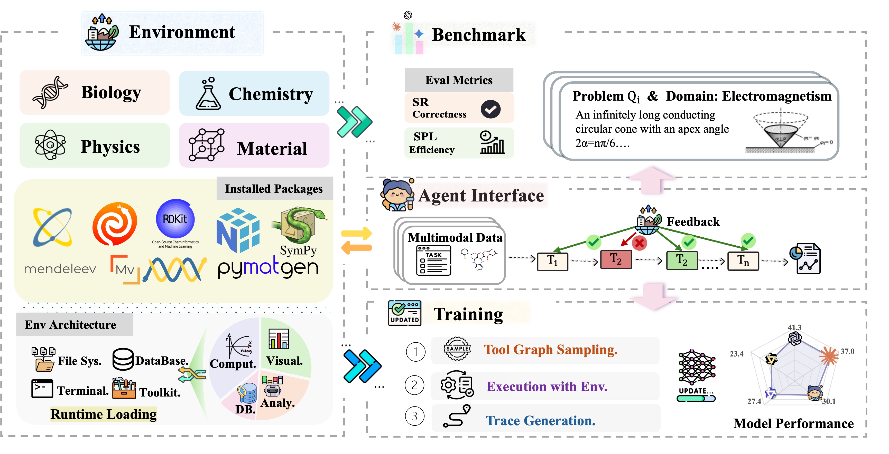
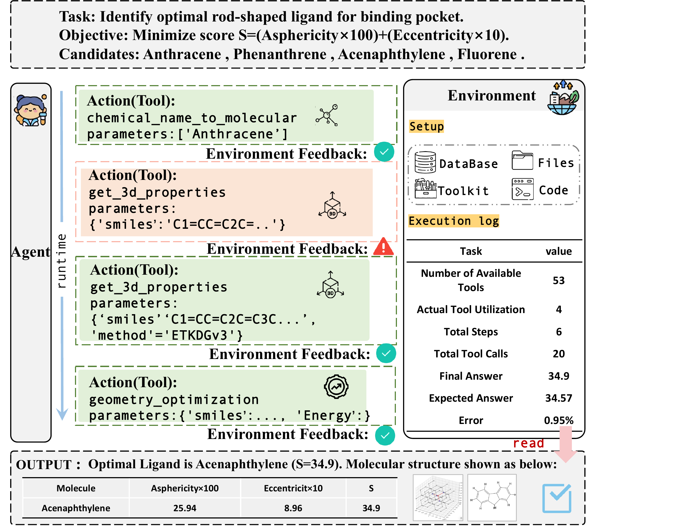
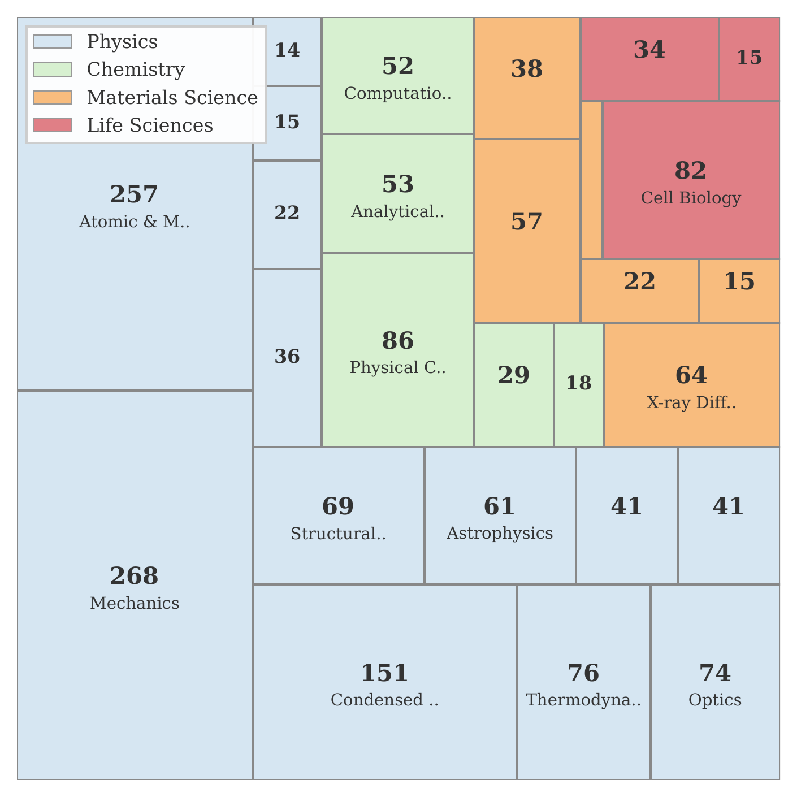
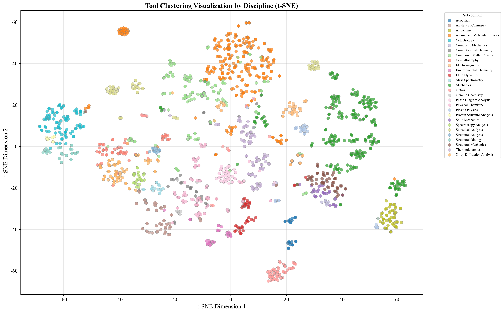
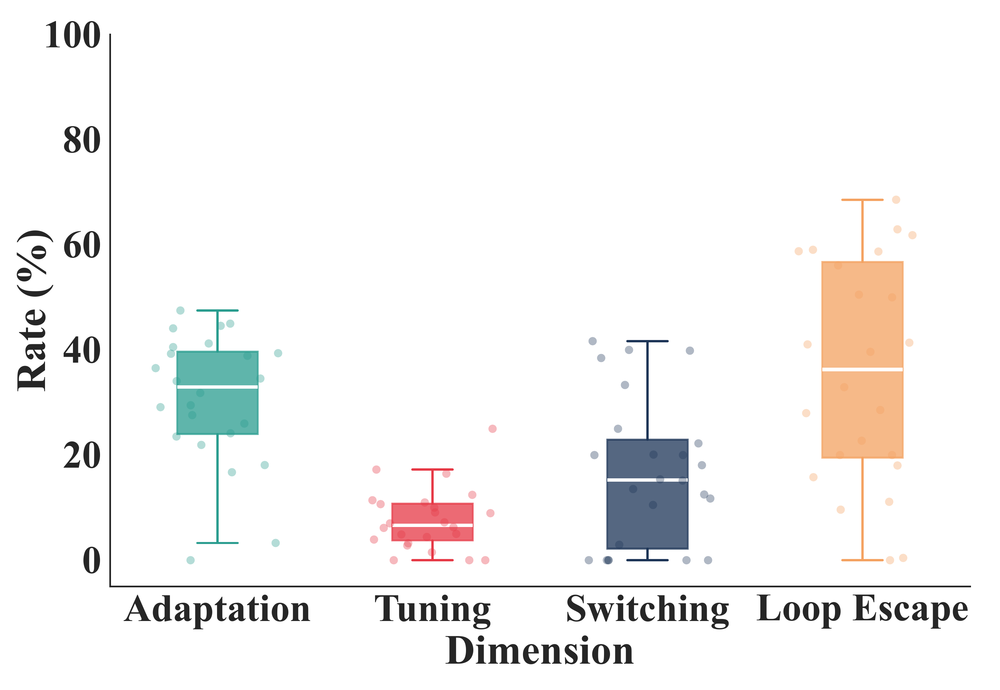
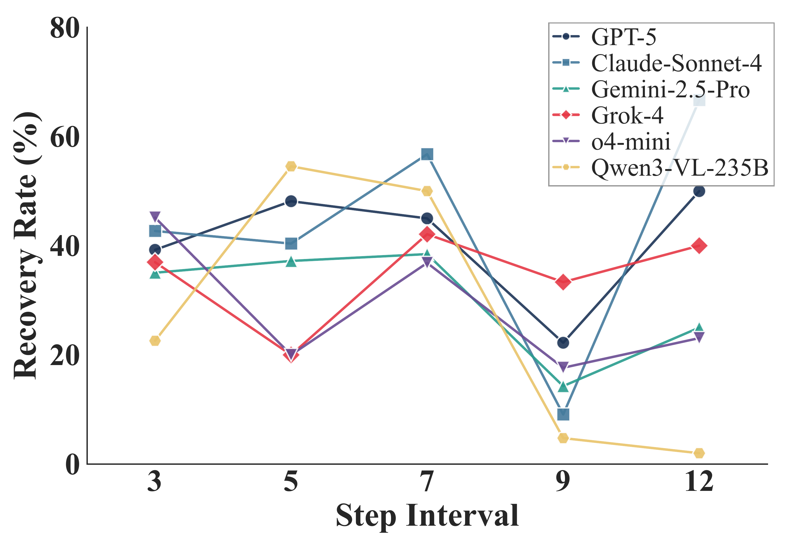

Complex scientific problems often require multiple steps of computation, each involving specialized domain tools. We present SciAgentGym, a benchmark environment for evaluating LLM agents' capability in multi-step scientific tool-use. SciAgentGym provides a comprehensive suite of scientific tools across physics, chemistry, materials science, life science, and astronomy, enabling rigorous evaluation of how well LLM agents can solve complex scientific problems through sequential tool invocation.
SciAgentGym contains over 1,780 scientific tools, multi-step reasoning tasks, a standardized evaluation pipeline, and flexible tool registration for extending the environment to new scientific domains.

SciAgentGym provides an integrated execution environment comprising four components: a toolkit of scientific tools, a filesystem for intermediate artifacts, scientific databases, and a Python interpreter. Each task runs in an isolated instance with its own registered tools and filesystem, ensuring reproducibility and avoiding cross-task contamination.

Figure 2: Environment interaction workflow for scientific agent evaluation.
SciAgentGym covers scientific tools from physics, chemistry, materials science, life science, and astronomy. The toolkit includes optics, mechanics, electromagnetism, thermodynamics, analytical chemistry, computational chemistry, crystallography, spectroscopy analysis, structural biology, and mass spectrometry.


SciAgentGym provides a standardized evaluation pipeline. It automatically infers and loads required tools, executes agent-generated tool calls in the environment, extracts the final answer from the response, and compares it against the gold answer with flexible matching.
We evaluate representative closed-source and open-source models under both without-tools and with-tools settings. Tool usage consistently improves performance, while the overall success rates show that multi-step scientific tool-use remains challenging for current LLM agents.
| Model | w/o Tools | w/ Tools | Delta | Phys. | Chem. | Mat. | Life |
|---|---|---|---|---|---|---|---|
| GPT-5 | 32.3 | 41.3 | +9.0 | 46.3 | 43.8 | 28.6 | 32.3 |
| Grok-4-1 | 30.4 | 40.3 | +9.9 | 47.2 | 38.2 | 32.4 | 30.0 |
| Claude-Sonnet-4 | 22.4 | 35.9 | +13.5 | 39.4 | 39.5 | 27.0 | 25.0 |
| Gemini-2.5-Flash | 28.5 | 32.7 | +4.2 | 38.3 | 32.4 | 28.6 | 17.2 |
| Gemini-2.5-Pro | 24.8 | 32.6 | +7.8 | 37.3 | 35.1 | 26.5 | 18.8 |
| SciAgent-8B | 23.3 | 30.1 | +6.8 | 33.0 | 35.2 | 9.1 | 31.0 |
| SciAgent-4B | 17.4 | 25.2 | +7.8 | 28.4 | 28.4 | 14.7 | 19.4 |
| Average | 23.2 | 28.1 | +4.9 | 31.7 | 30.4 | 18.9 | 20.2 |


@article{shen2026sciagentgym,
title={SciAgentGym: Benchmarking Multi-Step Scientific Tool-use in LLM Agents},
author={Shen, Yujiong and Yang, Yajie and Xi, Zhiheng and Hu, Binze and Sha, Huayu and Zhang, Jiazheng and Peng, Qiyuan and Shang, Junlin and Huang, Jixuan and Fan, Yutao and others},
journal={arXiv preprint arXiv:2602.12984},
year={2026}
}